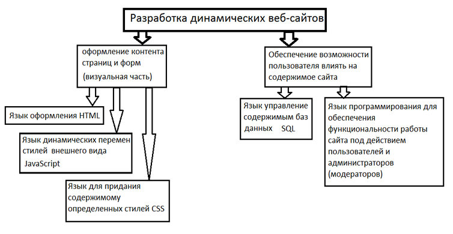

Модуль 2 Статические и динамические веб-сайты
Различия между статическими и динамическими страницами
Собрание страниц, объединенных некоторой общей тематикой и помещенных, как правило, на одном компьютере, называют Web-узлом или сайтом. Узлы Web подобны книгам, а Web-страницы - страницам этих книг. Компьютеры, на которых размещаются сайты, а также программы, обеспечивающие поддержку сайтов, называются серверами. На одном сервере может размещаться множество Web-узлов или сайтов [1].
Разница между статическими и динамическими веб-сайтами заключается в том, что пользователь может влиять на контент динамических веб-сайтов, тогда, как на контент статических сайтов не может. К примеру, к динамическим веб-сайтам относятся социальные сети разного рода, потому что пользователь может влиять на их контент следующими способами:
- самое важное: регистироваться, т.е. создавать новый аккаунт для себя, и, тем самым, пополнять содержимое баз данных новыми данными;
- отправлять сообщения;
- оставлять комментарии на чьих либо страницах и многое другое.
К статическим сайтам можно отнести сайты, располагающие всего лишь какой-то информацией, предназначенной только для чтения.
Статические Web-страницы создаются вручную, потом сохраняются и загружаются на сайт. Всякий раз, когда требуется изменить содержимое такой страницы, пользователь модифицирует ее на своем рабочем компьютере, применяя, как правило, HTML-редактор, сохраняет ее и затем заново загружает на Web-сайт [3].
Динамическая страница — веб-страница, содержание которой изменяется (генерируется) определенной программой. Этим динамическая страница отличается от статической страницы, которая имеет постоянный код и остается неизменной [4].
Построение динамических сайтов состоит из 2-х важных составляющих, каждая из которых включает, в свою очередь, еще по несколько составляющих, как показано на рисунке ниже. Статические сайты, в свою очередь, включают в себя только первую составляющую. При этом необходимость есть только в первой части первой составляющей. Динамические сайты могут существовать без второй части первой составляющей, но эта часть желательна, все остальные крайне необходимы.

Описание элементов схемы
CSS – язык каскадных таблиц стилей, используемый с целью расширения возможностей по оформлению веб-страниц, задания внешнего вида расположения текстов и графики на веб-страницах. Этот язык работает с шрифтами, цветом, полями, строками, высотой, шириной, фоновыми изображениями, позиционированием элементов и многими другими вещами. Если HTML используется для структурирования содержимого страницы, то CSS используется для форматирования этого структурированного содержимого. [2,7].
HTML – язык гипертекстовой разметки – это язык, посредством которого на статических и динамических веб-страницах размещается контент. Этот язык состоит из множества различных тегов.
Тэги - это метки, которые вы используете для указания браузеру, как он должен показывать ваш web-сайт.
Все тэги имеют одинаковый формат: они начинаются знаком "<" и заканчиваются знаком sign ">" [6].
SQL - это язык баз данных.
Базы данных содержат взаимосвязанные таблицы данных, содержимое которых и является теми самыми данными, которые может изменять пользователь на динамических страницах. Оно может пополняться, от части удаляться и заменяться в зависимости от действий пользователя. SQL - это аббревиатура от слов Structured Query Language, что означает структурированный язык запросов. Этот язык является стандартным средством для доступа к различным базам данных.
Система MySQL представляет собой сервер, к которому могут подключаться пользователи удаленных компьютеров.
Для работы с базами данных удобно пользоваться средством, входящее в комплект Web-разработчика:Denwer phpMyAdmin. Здесь можно создать новую базу данных, создать новую таблицу в выбранной базе данных, заполнить таблицу данными, а также добавлять, удалять и редактировать данные.